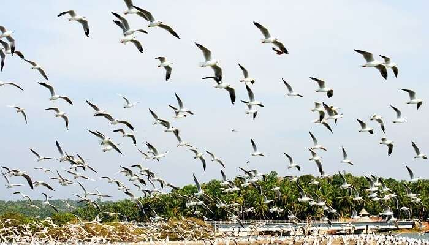
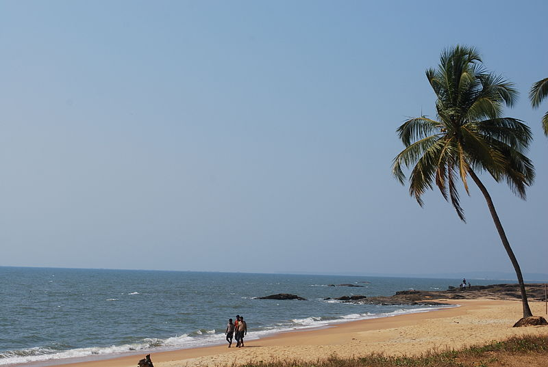

1. Pazhassi Raja Museum And Art Gallery

2. Kozhikode Beach

3. Mananchira Square
4. Beypore

5.Kadalundi Bird Sanctuary

6. Kozhippara Falls

7. Thusharagiri Falls
8. Sargaalaya Kerala Arts
9.Kappad Beach

10.Kallai River


Kozhikode will always have a special place in the history of Kerala as it is here that Vasco-da-Gama first landed and the legendarySpice Route came into existence. This region still has a historic charm to it. Kozhikode Beach is the personification of the numerous characteristics that make Kozhikode so unique.
People flock in large numbers to view the sunset from the beach. One gets a fresh supply of seafood in the shacks that surround the place. Kallumekaya (mussels) is a local favourite. A walk to Dolphins Point at dawn ensures a meeting with playful dolphins. You are also greeted by a majestic lighthouse and two piers opening into the sea. Both have been here for over a hundred years. Children flock to Lions Park and the nearby marine water aquarium which is open on all days from 08:00 hrs to 20:00 hrs.
Getting there
Nearest railway station: Kozhikode, about 3 km.
Nearest airport: Calicut International Airport, about 29 km | Kannur International Airport, about 95 km.